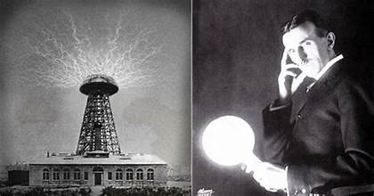

il telecomando
la torre di Tesla
La Wardenclyffe Tower, nota anche come Torre di Tesla, fu una delle prime torri aeree per la trasmissione senza fili. Progettata da Nikola Tesla era destinata alla telefonia commerciale senza fili attraverso l'Atlantico, alla radiodiffusione e alla dimostrazione pratica del trasferimento di energia senza fili.[1][2] La struttura non fu mai completamente operativa[3] e venne demolita nel 1917.
Deve il suo nome a James S. Warden, un avvocato e banchiere proprietario e acquirente di possedimenti a Shoreham, Long Island, a circa 60 miglia da Manhattan. Qui diede vita a una comunità-villaggio conosciuta come Wardenclyffe-On-Sound. Warden credeva che, con la messa in funzione del "sistema mondiale" di Tesla sarebbe nata nell'area una "città della radio", offrendo a Tesla 200 acri (81 ha) di terreno, nei pressi di una linea ferroviaria sul quale costruire il laboratorio e la sua torre per telecomunicazioni senza fili.
la torre di tesla
Colorado springs
One of Colorado Spring’s most famous visitors was electrical engineer and inventor Nikola Tesla, who in the spring of 1899, set up a laboratory on a small grassy hill in what is now Knob Hill.
Tesla was drawn to Colorado Springs by the same qualities that brought thousands of tuberculosis patients to the mountain city—the city’s thin and dry air. But unlike the city’s many residents, Tesla was not looking for a cure.
Tesla believed that electricity could be transmitted across vast distances through the atmosphere without using wires. To test his theories of wireless transfer of electrical energy, Tesla needed a place that was situated in the mountains where the air was thin and easy to ionize, and therefore more conductive to electricity. Tesla found Colorado Springs’s location at six thousand feet favorable for his research. The land was free and sparsely populated which gave him privacy. Also, the dryness of the air minimized leakage of currents, and as Tesla discovered to his delight, Colorado Springs was ideally suited to study the immense electrical storms that visited the region
colorado springs
la tesla electric light
.jfif)
Nel dicembre 1884, Tesla lasciò la sua posizione presso Thomas Edison a causa di un disaccordo con la società sul compenso finanziario per il suo lavoro. Forma immediatamente una partnership con Benjamin Vale e Robert Lane per produrre illuminazione ad arco denominata Tesla Electric Light and Manufacturing; l'azienda opera a Rahway, NJ, dal dicembre 1884 al 1886. Durante questo periodo, Tesla riceve brevetti per progetti migliorati di lampade ad arco che implementano una regolazione automatica e un interruttore di guasto, nonché brevetti per un commutatore dinamo e regolatori dinamo. Sfortunatamente, la società chiuse i battenti nell’autunno del 1886 quando i soci di Tesla formarono una nuova società chiamata Union Electric Light & Manufacturing Company, lasciando a Tesla nient’altro che azioni senza valore.
la tesla electric light
colorado springs